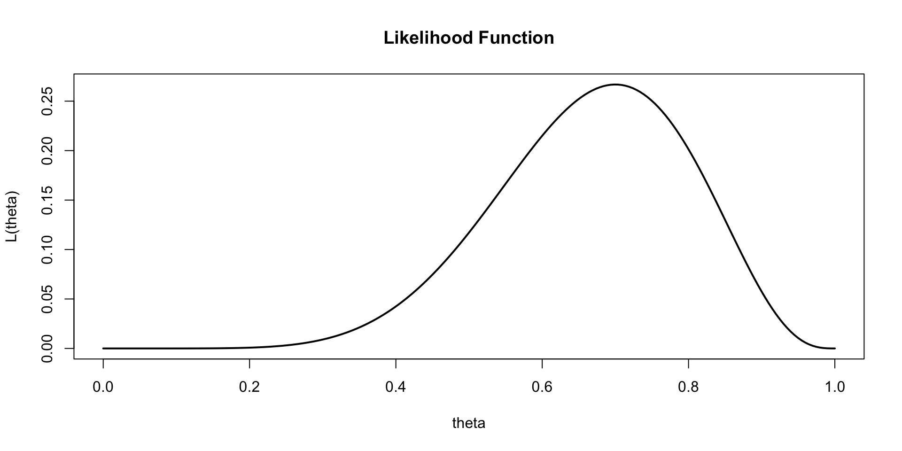
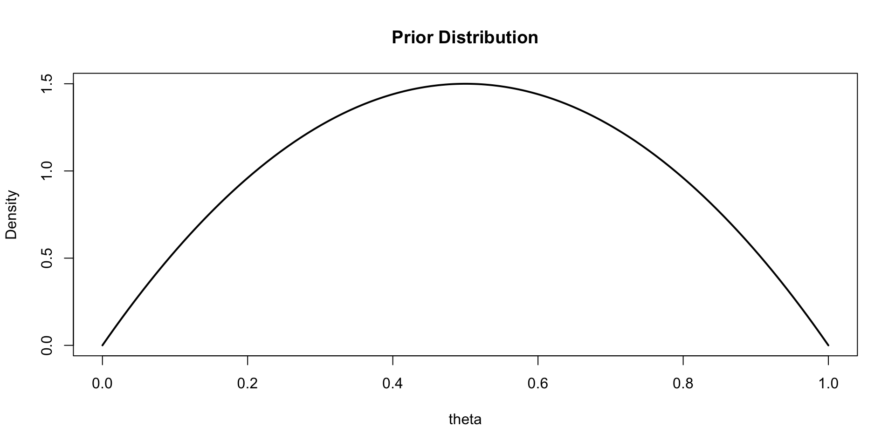
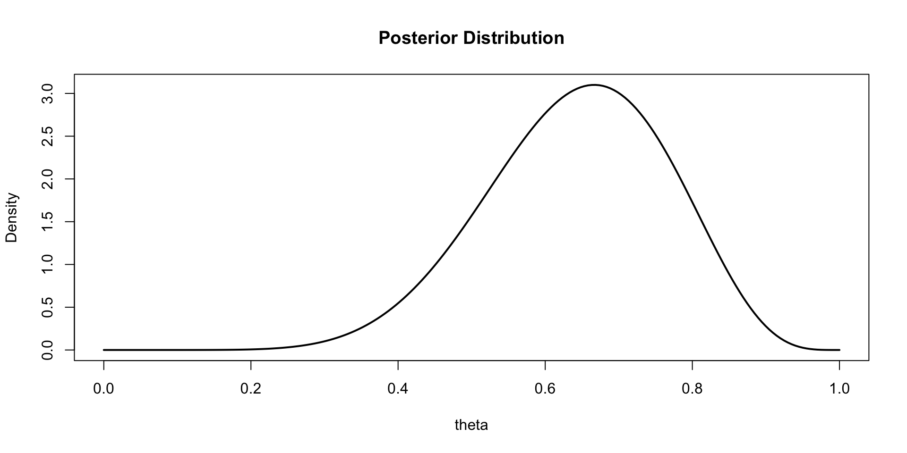
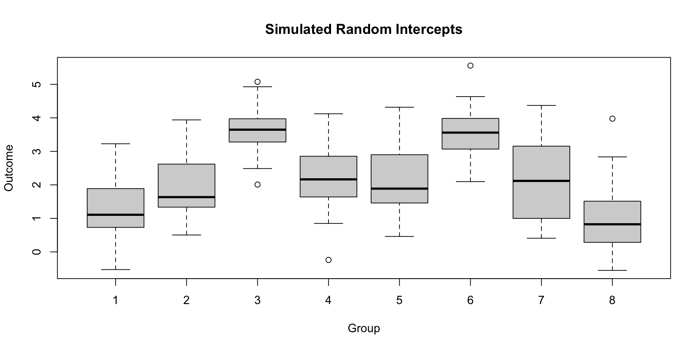
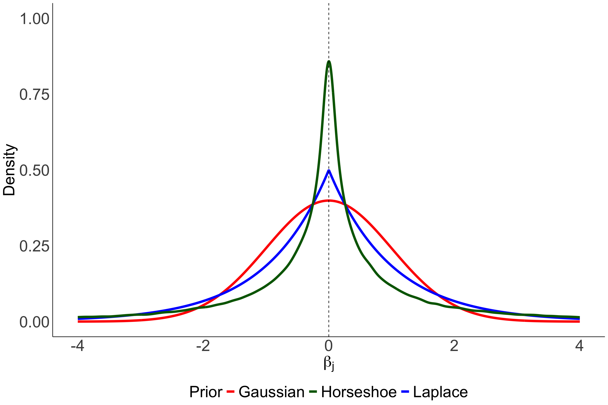
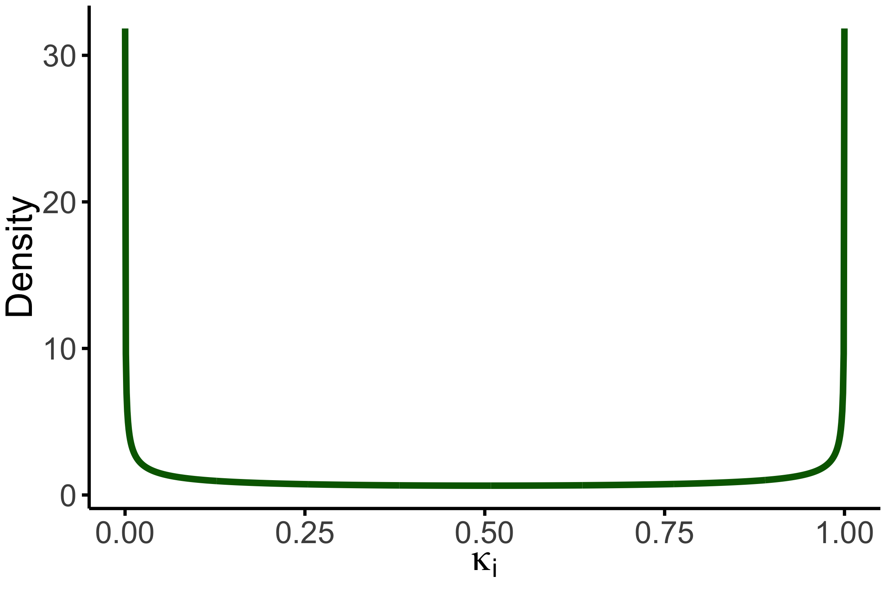

viewof priorParams = Inputs.form([
Inputs.range([0.5, 10], {value: 2, step: 0.5, label: "Prior α (Beta)"}),
Inputs.range([0.5, 10], {value: 2, step: 0.5, label: "Prior β (Beta)"})
])
viewof trueP = Inputs.range([0, 1], {value: 0.5, step: 0.05, label: "True p"})
viewof coinData = {
let heads = 0
let total = 0
const flipBtn = html`<button style="margin:4px 8px 4px 0; padding:6px 14px; font-size:1em;">🪙 Flip Coin</button>`
const resetBtn = html`<button style="margin:4px 0; padding:6px 14px; font-size:1em;">↺ Reset</button>`
const status = html`<div style="margin-top:8px; font-size:0.95em;">Flips: 0 | Heads: 0</div>`
const container = html`<div>${flipBtn}${resetBtn}${status}</div>`
const dispatch = () => {
status.textContent = `Flips: ${total} | Heads: ${heads}`
container.value = { heads, total }
container.dispatchEvent(new CustomEvent("input"))
}
flipBtn.onclick = () => {
const flip = Math.random() < trueP ? 1 : 0
total += 1
heads += flip
dispatch()
}
resetBtn.onclick = () => {
heads = 0
total = 0
dispatch()
}
container.value = { heads, total }
return container
}Applied Bayesian Methods
DAY 1: Theoretical introduction and multi-level models
Alexander Massey
April 7, 2026
Introduction
Bayesian inference is based on updating beliefs:
\[ p(\theta \mid x) = \frac{p(x \mid \theta)\, p(\theta)}{p(x)} \]
- Likelihood = information from data
- Prior = information before data
- Posterior = updated belief
Likelihood Example
Suppose \(X \sim \text{Binomial}(n,\theta)\)

Adding a Prior
Assume a Beta prior: \(\theta \sim \text{Beta}(2,2)\)

Posterior Distribution
Using conjugacy: \(\theta \mid x \sim \text{Beta}(2 + x,\; 2 + n - x)\)

Likelihood Example
Suppose \(X \sim \text{Binomial}(n,\theta)\)

Adding a Prior
Assume a Beta prior: \(\theta \sim \text{Beta}(2,2)\)

Posterior Distribution
Using conjugacy: \(\theta \mid x \sim \text{Beta}(2 + x,\; 2 + n - x)\)

Updating the Posterior with New Data
Simulate coin flips and watch the posterior update in real time.
prior_a = priorParams[0]
prior_b = priorParams[1]
n_obs = coinData.total
x_obs = coinData.heads
post_a = prior_a + x_obs
post_b = prior_b + (n_obs - x_obs)
theta = Array.from({length: 300}, (_, i) => i / 299)
function betaPDF(theta, a, b) {
function lgamma(x) {
const c = [76.18009172947146,-86.50532032941677,24.01409824083091,
-1.231739572450155,0.1208650973866179e-2,-0.5395239384953e-5];
let y = x, tmp = x + 5.5;
tmp -= (x + 0.5) * Math.log(tmp);
let ser = 1.000000000190015;
for (let j = 0; j < 6; j++) ser += c[j] / ++y;
return -tmp + Math.log(2.5066282746310005 * ser / x);
}
const logB = lgamma(a) + lgamma(b) - lgamma(a + b);
return Math.exp((a - 1) * Math.log(theta) + (b - 1) * Math.log(1 - theta) - logB);
}
priorCurve = theta.slice(1, -1).map(t => ({theta: t, density: betaPDF(t, prior_a, prior_b), curve: "Prior"}))
postCurve = theta.slice(1, -1).map(t => ({theta: t, density: betaPDF(t, post_a, post_b), curve: "Posterior"}))
allCurves = [...priorCurve, ...postCurve]
Plot.plot({
width: 600,
height: 600,
marginLeft: 50,
style: { fontSize: "24px" },
x: {label: "θ", domain: [0, 1], labelOffset: 36},
y: {label: "Density", nice: true},
color: {
legend: true,
domain: ["Prior", "Posterior"],
range: ["#7bafd4", "#e07b54"],
swatchWidth: 30,
swatchHeight: 18,
style: {fontSize: "18px"}
},
marks: [
Plot.lineY(allCurves, {x: "theta", y: "density", stroke: "curve", strokeWidth: 6.5}),
Plot.ruleY([0]),
Plot.ruleX([trueP], {stroke: "black", strokeWidth: 3, strokeDasharray: "6,4"}),
<!-- Plot.ruleX(n_obs > 0 ? [x_obs / n_obs] : [], {stroke: "steelblue", strokeWidth: 3, strokeDasharray: "6,4"}) -->
],
caption: `Flips: ${n_obs} | Heads: ${x_obs} | Posterior: Beta(${post_a}, ${post_b}) | Mean = ${(post_a / (post_a + post_b)).toFixed(3)}`
})Posterior Summary Table
| Quantity | Value |
|---|---|
| Posterior Mean | 0.6429 |
| Posterior Variance | 0.0153 |
Multi-level Model (Random Intercept)
Hierarchical data structure:
\[y_{ij} = \alpha + u_j + \epsilon_{ij}\] \[u_j \sim \mathcal{N}(0, \sigma_u^2)\] \[\epsilon_{ij} \sim \mathcal{N}(0, \sigma^2)\]
Simulating Multi-level Data

Key Takeaways
- Likelihood is a function of \(\theta\) for fixed data
- Prior encodes pre-data information
- Posterior combines prior and data
- Multi-level models handle hierarchical structure
Bayesian Connection To Penalized Regression
Classical Linear Regression Model: \[ y = X\beta + \epsilon \]
\[ y \sim N(X\beta, \sigma^2) \qquad \epsilon \sim N(0, \sigma^2) \]
Minimize the sum of squared residuals:
\[ \begin{align*} \widehat{\beta}_{OLS} &= \arg\min_{\beta} \sum_{i=1}^n (y_i - x_i^T \beta)^2 \\ &= \arg\min_{\beta} \| y - X\beta\|_2^2 \end{align*} \]
High variance! Small changes in data can lead to large changes in \(\hat{\beta}_{OLS}\).
Regularization
Ridge Regression: \[ \widehat{\beta}_{Ridge} = \arg\min_{\beta} \color{red}{\| y - X\beta\|_2^2} + \lambda \color{blue}{\|\beta\|_2^2} \]
Lasso: \[ \widehat{\beta}_{Lasso} = \arg\min_{\beta} \color{red}{\|y - X\beta\|_2^2} + \lambda \color{blue}{\|\beta\|_1} \]
- Error \(+ \lambda\) Constraint
- \(\lambda\) is a tuning parameter that controls the strength of regularization.
- glmnet estimates \(\lambda\) using cross-validation.
Bayesian Linear Regression…
Maximum A Posteriori (MAP) estimator maximizes the posterior \(P(\beta|y)\) : \[ \begin{align*} \widehat{\beta}_{MAP} &= \arg\max_{\beta} P(\beta|y) \\ &=\arg\max_{\beta} \frac{P(y|\beta)P(\beta)}{P(y)} \\ &=\arg\max_{\beta} P(y|\beta)P(\beta) \\ &=\arg\max_{\beta} \big[ \log P(y|\beta)+\log P(\beta)]\big] \end{align*}\]
Now to specify a likelihood, i.e. \(P(y|\beta)\), and prior, i.e. \(P(\beta)\).
Bayesian ridge regression
Gaussian likelihood: \(\quad y \sim N(X\beta, \sigma^2)\) \[ \begin{align*} P(y|\beta) &= \frac{1}{(2\pi\sigma^2)^{n/2}} \exp\left(-\frac{1}{2\sigma^2} \|y - X\beta\|_2^2\right) \\ \boldsymbol{\log P(y|\beta)}&=-\frac{n}{2}\log(2\pi\sigma^2) - \frac{1}{2\sigma^2} \|y - X\beta\|_2^2 \\ &\propto -\frac{1}{2\sigma^2} \color{red}{\|y - X\beta\|_2^2}\\ \end{align*}\]
Gaussian prior: \(\quad \beta_j \sim N(0, \tau^2)\quad j=1,...,p\quad\) (same for all!)
\[\begin{align*} \boldsymbol{\log P(\beta)} \propto -\frac{1}{2\tau^2} \color{blue}{\|\beta\|_2^2} \end{align*}\]
Equivalence to Ridge: \[ \widehat{\beta}_{Ridge} = \arg\min_{\beta} \color{red}{\|y - X\beta\|_2^2} + \frac{\sigma^2}{\tau^2} \color{blue}{\|\beta\|_2^2} \] where \(\lambda = \frac{\sigma^2}{\tau^2}\).
Sparse Bayesian Priors
Use priors with very stronger shrinkage near zero for variable selection.
Bayesian Lasso
Equivalence when using the Laplace prior:
\[ \beta_j \sim \frac{1}{2b}\exp\left(-\frac{|\beta_j|}{b}\right) \]
Horseshoe Prior
\[ \beta_i \mid \tau,\lambda_i \sim N(0,\tau^2\lambda_i^2), \qquad \lambda_i \sim \text{Half-Cauchy}(0,1) \]
- Global shrinkage: \(\tau\)
- Local shrinkage: \(\lambda_i\)
Large coefficients can escape shrinkage to zero.
Shape of the regularization priors

Horseshoe Shrinkage Factor
Reparameterize the horseshoe prior using the shrinkage factor \(\kappa_i = \frac{1}{1+\tau^2\lambda_i^2}\). \[
\kappa_i \sim \text{Beta}(1/2,1/2)
\] - \(\kappa_i \approx 1\) → strong shrinkage (\(\beta_i \approx 0\))
- \(\kappa_i \approx 0\) → little shrinkage (signal preserved)
